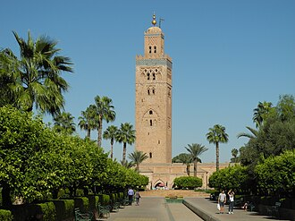

Überblick
La mosquée Koutoubia est un édifice religieux construit au XIIe siècle à Marrakech, Maroc. Elle est la plus grande mosquée de la ville. Son architecture et son décor ascétique reflètent l'art des Almohades.
جامع الكُتبية هو أكبر مسجد في مراكش، ويوجد في جنوب غرب المدينة بالقرب من ساحة جامع الفنا في المغرب، وتحيط به حدائق كبيرة. ترجع تسمية المسجد إلى «الكتبيين»، وهو اسم سوق لبيع الكتب و المخطوطات كان بمقربة من المسجد، وأُحرق خلال فترة الاستعمار الفرنسية للمغرب. بني المسجد بأمر الحاكم الموحدي عبد المؤمن بن علي الكومي عام 1147م. تضرر الجزء العلوي من الصومعة عام 2023م بسبب زلزال الحوز، ورمم بعد ذلك.
The Kutubiyya Mosque or Koutoubia Mosque is the largest mosque in Marrakesh, Morocco. It is located in the southwest medina quarter of Marrakesh, near the Jemaa el-Fnaa market place, and is flanked by large gardens.
Kutubiyye Camii, Fas'ın Marakeş kentinde bulunan bir camidir. Cami, 1147 yılında Muvahhidler döneminde Abdülmü'min tarafından inşa edilmiştir ve medine mahallesinde Câmiü'l-Fenâ yakınında yer almaktadır.
Masjid Kutubiyya atau Masjid Koutoubia adalah masjid terbesar di Marrakesh, Maroko. Terletak di kawasan medina barat daya Marrakesh, dekat pasar Jemaa el-Fnaa, dan diapit oleh taman-taman besar.
مسجد کتبیہ یا جامع کتبیہ المغرب کے شہر مراکش کی سب سے بڑی مسجد ہے۔ اس مسجد کا مینار موحدین کے خلیفہ یعقوب المنصور کے دور حکومت میں مکمل ہوا۔
Die Koutoubia-Moschee ist die größte Moschee von Marrakesch. Sie stammt aus der 2. Hälfte des 12. Jahrhunderts und ist damit eine der ältesten Moscheen Marokkos.
La mezquita Kutubía, Koutoubia, Kutubiya, Jami‘ al-Kutubiyah o Kutubiyyin es una mezquita, un edificio para el culto de la religión islámica, edificado en el siglo XII en la ciudad de Marrakech en Marruecos, representativo del arte almohade. Es la mezquita más grande de Marrakech.
La moschea della Kutubiyya è il principale edificio religioso della città di Marrakesh, in Marocco.
A mesquita Cutubia ou Kutubiya é a maior mesquita e um dos monumentos mais representativos da cidade de Marraquexe (Marrocos). Seu minarete é o modelo dos das mesquitas de Rabate, com a Torre Haçane e de Sevilha (Espanha) com a Giralda.
De Koutoubia-moskee is de grootste moskee in de Marokkaanse stad Marrakesh. De bouw van de moskee begon rond 1150. De minaret werd voltooid tijdens de regeerperiode van kalief Abu Yusuf Yaqub al-Mansur van de Berberse Almohadendynastie (1184-1199) en diende als voorbeeld voor de Giralda in Sevilla en later voor de Hassantoren in Rabat. Na de voltooiing van de minaret bleek echter dat de moskee niet goed gericht was op Mekka en daarop werd bevel gegeven deze te herbouwen.
クトゥビーヤ・モスク は、モロッコの都市マラケシュにある、市内で最も大きなモスク。ミナレットはムワッヒド朝の第3代アミール、ヤアクーブ・マンスールの統治下（1184年から1199年）に建設され、後にラバトのハサン塔となる、セビリアのヒラルダのモデルとして使用された。
쿠투비아 모스크(아랍어: جامع الكتبية)는 모로코 마라케시에서 가장 큰 모스크이다. 미나레트는 마라케시의 중요한 랜드마크이자 상징으로 여겨진다.
Аль-Кутубия — самая большая мечеть марокканского города Марракеш, известная великолепным 69-метровым минаретом, который послужил прототипом таких построек альмохадского периода, как башня Хасана в Рабате и севильская Хиральда. Заказчиком строительства выступил эмир Якуб аль-Мансур Название мечети происходит то ли от библиотеки при ней, то ли от книготорговцев, лотки которых прежде занимали площадку у мечети. Венчают минарет четыре медных шара. Внутри устроена лестница такой ширины, чтобы муэдзин мог въезжать по ней на лошади.
มัสยิดอัลกุตุบียะฮ์ เป็นมัสยิดที่ใหญ่ที่สุดในมาร์ราคิช ประเทศโมร็อกโก ตั้งอยู่ที่บริเวณฝั่งตะวันตกเฉียงใต้ของย่านอัลมะดีนะฮ์ของมาร์ราคิช ซึ่งอยู่ใกล้กับญามิอุลฟะนาอ์ และอยู่ติดกับสวนขนาดใหญ่
Moscheea Koutoubia este cea mai mare moschee din Marrakech, Maroc. Este situată în cartierul de sud-vest al medinei din Marrakesh, lângă piața Jamaa el-Fna, și este flancată de grădini vaste.
Auf der Karte
Dokumente und Links
- Wikipédia — Français
- Wikipédia — العربية
- Wikipédia — English
- Wikipédia — Türkçe
- Wikipédia — Bahasa Indonesia
- Wikipédia — اردو
- Wikipédia — Deutsch
- Wikipédia — Español
- Wikipédia — Italiano
- Wikipédia — Português
- Wikipédia — Nederlands
- Wikipédia — 中文
- Wikipédia — 日本語
- Wikipédia — 한국어
- Wikipédia — Русский
- Wikipédia — ไทย
- Wikipédia — Română
- Wikidata — Q1137533
Daten: Wikidata (CC0), alle 3 Monate aktualisiert. Das Jahr ist das älteste bekannte Baudatum des Gebäudes: Bei einem Bauwerk, das erst später zur Moschee wurde (wie die Hagia Sophia), ist es das des ursprünglichen Gebäudes. Fotos: Wikimedia Commons, Urheber und Lizenz auf der Seite jedes Fotos.